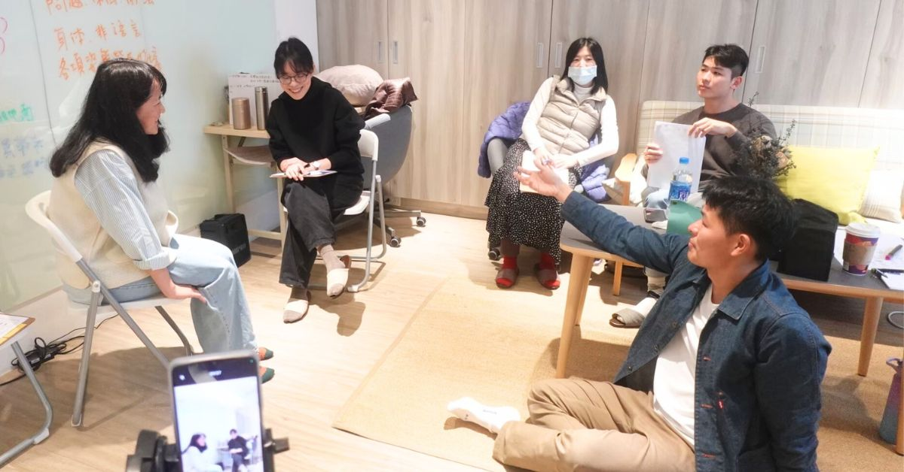

線上整合式實務團督：演練專班
「說對了，然後呢？」
「我有照你說的講，但還是沒有用。」
心理師：「你好像很難過。」
來訪者：「嗯，對。」
然後呢？
主管：「你需要修正跟客戶說話的態度。」
下屬：「喔，好。」
然後呢？
男友：「你是不是不開心？」
女友：「嗯啊。」
然後呢？

-
對方不是「沒有」反應，而是他的反應不如你的預期
在教室做小組演練時，你、你的同學、老師助教，都「同意」了這個方法有效。剩下的只是你夠不夠熟練。但出了教室，你想互動的對象，不見得同意。
問：世界上什麼樣的情話最厲害？答：從你摯愛的情人嘴裡說出來的任何一句話——就算只是一句「早安」。
-
你可能「忘了」觀察對方的反應
學技術的人腦中常常是：下一句要說什麼？下一步該怎麼做？接下來要出哪一招？我把這個現象叫做「技術阿宅」。
所以督導時我一律先問：「當你這樣說的時候，對方的反應是什麼？」通常會有一陣微妙的沉默，然後對方不好意思地承認：「我不記得了。」
-
就算對方真的沉默，沉默也有三種
「不想要」的背後是一個 NO——用沉默來抗議、拒絕或測試。重點不是他沉默，而是他在 NO 什麼。
「不知道」的背後是一個問號——不知道該怎麼說。這時要先搞清楚他不知道什麼，而不是像心急的小學老師，只想聽到自己想聽的答案，卻忘了引導他「想出」答案。
「還在思考」——一個重要的問題、一個關鍵的細節，會讓一個人陷入沉思。那是繆思女神來到的瞬間。請務必認出，不要隨意打斷。
演練專班讓心理師不只在口頭上討論個案，而是在現場與即興演員進行模擬演練。要練的是：自己何時開始緊張、哪一句理論上正確卻沒有連上線、當原本準備的理解失效時，能不能繼續留在關係裡。
跟你演練的是誰
與王家齊共同帶領的是即興劇演員趙懷玉。她從 2006 年開始做即興劇，是勇氣即興劇場的團員，長篇形式《去你的烏托邦》的創作者——這齣戲在台灣與海外演出近八十場。她也在澳洲、新加坡、菲律賓與德國的藝術節教學與演出。
她也受過兩年的邁斯納（Meisner）表演訓練。用她自己的話說，這段訓練深深影響了她的即興工作——鼓勵演員完全在場、情緒上誠實，並且真的回應同台的夥伴。
關於 AI 與心理工作，可以誠實地分開來說
AI 可以做的：AI 可以協助心理教育、情緒整理、日記反思、初步分析、溝通腳本、行動提醒，以及一部分低強度的支持。這些是真的有用的。
真人心理工作承擔的：真人的心理工作則需要承擔關係中的即時回應、衝突後的修復、共同調節，以及複雜的臨床判斷與專業責任。
《線上整合式實務團督：演練專班》由大心健康管理顧問主辦，王家齊與即興劇演員趙懷玉共同帶領，線上進行。2025 年第二期報名已截止，但候補無限期——填表留下你方便的時段，人數湊齊會有人與你聯絡。